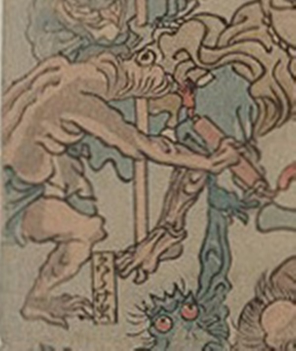

病気；ビョウキ，疫神；エキシン，かわらけ虫；カワラケムシ

かわらけ虫が擬人化した化物。頭部は前方に伸び、目が飛び出している。右手には巻物を持っている。
著作者：歌川芳虎／出典：親書誌：U426_nichibunken_0012：諸病諸薬の戦い；ショビョウショヤクノタタカイ／日付：2006／資源識別子：U426_nichibunken_0012_0020_0000
Copyright (c)2010- International Research Center for Japanese Studies, Kyoto, Japan. All rights reserved.